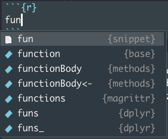

Functions
As we’ve mentioned, functions, and especially user built custom functions, are a key feature of R and are a really powerful of reducing code repetition.
Function basics
Functions allow us to:
- incorporate sets of instructions that we want to use repeatedly
- contain complex code in a neat sub-program
- reduce opportunity for errors
- make code more readable
You can do anything with functions that you can do with vectors:
- assign them to variables
- store them in lists
- pass them as arguments to other functions
- create them inside functions
- return them as the result of a function
In general, functions usually:
- accept parameters (arguments) <- INPUT
- return value(s) <- OUTPUT
Elements of a function
Here’s a simple skeleton of a function.
name <- function(variables) {
}Function name
This can be any valid variable name, but you should avoid using names that are used elsewhere in R, such as dir, function, plot, etc
- choose descriptive names
- use verbs
- check whether they are already in use:
? function.name
(you can access a function from a specific package using package.name::function.name)
Arguments
Functions can have any number of arguments. These can be any R object: numbers, strings, arrays, data frames, of even pointers to other functions; anything that is needed for the function to run.
- Again, use descriptive names for arguments.
Body
The function code between the {} brackets is run every time the function is called. Ideally functions are short and do just one thing.
All inputs required for computation in the body must be supplied as arguments.
Simple example
Let’s write a simple function that takes two arguments x and y and adds them together.
add <- function(x, y) {
x + y
}Let’s test it.
x <- 4
y <- 2
add(x, y)## [1] 6Cool it works!
Return value
By default, the output of the last line of the code is evaluated is the value that will be returned by the function.
We can override that default by using return to explicitly specify what is returned.
add <- function(x, y) {
x + y
return(NULL)
}add(x, y)## NULLIt is not necessary that a function return anything, for example a function that makes a plot might not return anything, whereas a function that does a mathematical operation might return a number, or a list.
Function Environment
Every time a function is called, a new environment is created to host execution.
Each invocation is completely independent of previous ones
Variables used within are local, e.g. their scope lies within - and is limited to - the function itself. They are therefore invisible outside the function body
Objects required by the function will be sought first in the local environment. If an argument specified in the function is missing, it will return an error, even if such an object exists in the global environment.
Objects required by computation but not specified as function arguments will be sought in the containing environment iteratively until it reaches the global environment. This can be a source of bugs when developing with an untidy global environment.
b <- 10
f2 <- function(a){a + b}
f2(a = 10)## [1] 20rm(b) # remove object b
f2(a = 10)## Error in f2(a = 10): object 'b' not foundSolution: always make sure any required variables are passed as arguments to your functions.
Creating our user-built functions
Now that we’ve got all the information required, we can start building a function that will return our latitude and longitude for each individual.
We can use function destPoint form package geosphere to calculate the destination latitude and longitude from a given starting point, the distance travelled and the direction (bearing) travelled in.
I our case the distance travelled is equivalent to stemDistance and the direction or bearing is equivalent to stemAzimuth. The starting point is given by decimalLatitude and `decimalLongitude.
Now, let’s write a function that takes these columns as inputs and returns the latitude and longitude of the location of our individuals.
Storing functions in scripts.
It’s best to store functions in separate scripts in the R/ directory.
We can use function usethis::use_r() to create scripts in R/. Let’s create a new one to start working on our function.
usethis::use_r("geolocate")✔ Setting active project to '/Users/Anna/Documents/workflows/workshops/books/rrresearchACCE20'
● Modify 'R/geolocate.R'This creates the required R/ directory, creates a new R script named geolocation.R within it and launches it for editing all in one go! Nice.
Experimenting
Now before we begin writing our function, let’s test destPoint out. To do that, let’s subset a single row from individual and use it to test out the function. We need to supply a vector of length two, containing the starting longitude and latitude to argument p. We pass stemAzimuth to argument b (for bearing) and stemDistance to argument d (for distance).
x <- individual[1,]
geosphere::destPoint(p = c(x$decimalLongitude, x$decimalLatitude),
b = x$stemAzimuth, d = x$stemDistance)## lon lat
## [1,] -71.28333 44.06151This looks like it’s working nicely. Let’s also check that it vectorises easily, i.e. that if we give it vectors of values instead of single ones that it works properly.
x <- individual[1:5,]
geosphere::destPoint(p = c(x$decimalLongitude, x$decimalLatitude),
b = x$stemAzimuth, d = x$stemDistance)## Error in .pointsToMatrix(p): Wrong length for a vector, should be 2geosphere::destPoint(p = cbind(x$decimalLongitude, x$decimalLatitude),
b = x$stemAzimuth, d = x$stemDistance)## lon lat
## [1,] -71.28333 44.06151
## [2,] -71.28325 44.06165
## [3,] -71.28419 44.06109
## [4,] -71.28424 44.06096
## [5,] -71.28409 44.06103Excellent! I now get a two dimensional matrix of with two columns and a row for each input element! This is looking promising.
We’re ready to start writing our function.
Developing our function
Let’s start by using a handy feature in Rstudio, code snippets. Code snippets are text macros that are used for quickly inserting common snippets of code.
The fun snippet inserts an R function definition. To invoke it start typing fun until the auto-complete drop-down pops up.
fun
Select fun and hit Return / Enter.
You end up with this handy function skeleton. Now, let’s start populating it with our own function.
name <- function(variables) {
}First lets start with a descriptive name:
get_stem_location <- function(variables) {
}Let’s add our arguments:
get_stem_location <- function(decimalLongitude, decimalLatitude, stemAzimuth, stemDistance){
}Finally, let’s populate the body our our function:
get_stem_location <- function(decimalLongitude, decimalLatitude, stemAzimuth, stemDistance){
geosphere::destPoint(p = cbind(decimalLongitude, decimalLatitude),
b = stemAzimuth, d = stemDistance)
}Let’s also convert the output to a tibble, for better printing.
get_stem_location <- function(decimalLongitude, decimalLatitude, stemAzimuth, stemDistance){
geosphere::destPoint(p = cbind(decimalLongitude, decimalLatitude),
b = stemAzimuth, d = stemDistance) %>%
tibble::as_tibble()
}Now let’s test it out with vectors from individual.
test <- get_stem_location(x$decimalLongitude, x$decimalLatitude,
x$stemAzimuth, x$stemDistance)
test## # A tibble: 5 x 2
## lon lat
## <dbl> <dbl>
## 1 -71.3 44.1
## 2 -71.3 44.1
## 3 -71.3 44.1
## 4 -71.3 44.1
## 5 -71.3 44.1Looks like it works nicely!
Defensive programming in functions
Our function seems to be working correctly but it’s good to incorporate checks, especially on our inputs and outputs. For example, if we supply a character vector to our function by mistake, our function won’t work.
We can write smart checks using the suite of functions in package checkmate.
One such function is assert_numeric()
This checks whether the the object we give it is numeric. If the check is not successful, it returns the object invisibly. If the check is not successful, it throws an error.
checkmate::assert_numeric(x$decimalLatitude)
checkmate::assert_numeric(x$uid)## Error in eval(expr, envir, enclos): Assertion on 'x$uid' failed: Must be of type 'numeric', not 'character'.There are two other versions, test_numeric which returns FALSE if the check is not successful, and check_numeric which returns a string with the error message. We want to throw an error and stop execution so we use assert_numeric.
Let’s add a validation check for each argument in our function.
get_stem_location <- function(decimalLongitude, decimalLatitude, stemAzimuth, stemDistance){
# validation checks
checkmate::assert_numeric(decimalLongitude)
checkmate::assert_numeric(decimalLatitude)
checkmate::assert_numeric(stemAzimuth)
checkmate::assert_numeric(stemDistance)
geosphere::destPoint(p = cbind(decimalLongitude, decimalLatitude),
b = stemAzimuth, d = stemDistance) %>%
tibble::as_tibble()
}Let’s also add a check to our output. Let’s throw a warning if there are any NA values in our output.
First we store our output so we can evaluate it.
get_stem_location <- function(decimalLongitude, decimalLatitude, stemAzimuth, stemDistance){
# validation checks
checkmate::assert_numeric(decimalLongitude)
checkmate::assert_numeric(decimalLatitude)
checkmate::assert_numeric(stemAzimuth)
checkmate::assert_numeric(stemDistance)
out <- geosphere::destPoint(p = cbind(decimalLongitude, decimalLatitude),
b = stemAzimuth, d = stemDistance) %>%
tibble::as_tibble()
}Next we can add our check:
We can check the whole tibble for NAs in one go. We get a 2 dimensional matrix of logical values.
is.na(test) %>% head()## lon lat
## [1,] FALSE FALSE
## [2,] FALSE FALSE
## [3,] FALSE FALSE
## [4,] FALSE FALSE
## [5,] FALSE FALSEWe can then wrap the output of that in any() which tests whether there are any TRUE values in a logical array.
any(is.na(test))## [1] FALSELet’s apply that to our function.
get_stem_location <- function(decimalLongitude, decimalLatitude, stemAzimuth, stemDistance){
# validation checks
checkmate::assert_numeric(decimalLongitude)
checkmate::assert_numeric(decimalLatitude)
checkmate::assert_numeric(stemAzimuth)
checkmate::assert_numeric(stemDistance)
out <- geosphere::destPoint(p = cbind(decimalLongitude, decimalLatitude),
b = stemAzimuth, d = stemDistance) %>%
tibble::as_tibble()
checkmate::assert_false(any(is.na(out)))
}Lastly, we need to return our actual output!
get_stem_location <- function(decimalLongitude, decimalLatitude, stemAzimuth, stemDistance){
# validation checks
checkmate::assert_numeric(decimalLongitude)
checkmate::assert_numeric(decimalLatitude)
checkmate::assert_numeric(stemAzimuth)
checkmate::assert_numeric(stemDistance)
out <- geosphere::destPoint(p = cbind(decimalLongitude, decimalLatitude),
b = stemAzimuth, d = stemDistance) %>%
tibble::as_tibble()
checkmate::assert_false(any(is.na(out)))
return(out)
}Let’s test it again:
get_stem_location(x$decimalLongitude, x$decimalLatitude,
x$stemAzimuth, x$stemDistance)## # A tibble: 5 x 2
## lon lat
## <dbl> <dbl>
## 1 -71.3 44.1
## 2 -71.3 44.1
## 3 -71.3 44.1
## 4 -71.3 44.1
## 5 -71.3 44.1And now, remove any excess code form our script and save.
Our function is now ready to be sourced into our last preprocessing stage, adding the new stemLat and stemLon columns. 🎉.
Making new variables
Let’s move back to our individual.R script. At the top of our script, let’s add the code to source our function so it’s available during preprocessing:
source(here::here("R", "geolocation.R"))Now we want to use data in individual to geolocate our individulas while at the same time creating new columns stemLat and stemLon
For this we use dplyr::mutate():
individual %>% dplyr::mutate(stemLat = get_stem_location(decimalLongitude, decimalLatitude,
stemAzimuth, stemDistance)$lat,
stemLon = get_stem_location(decimalLongitude, decimalLatitude,
stemAzimuth, stemDistance)$lon)## # A tibble: 14,961 x 32
## uid namedLocation date eventID domainID siteID plotID individualID
## <chr> <chr> <date> <chr> <chr> <chr> <chr> <chr>
## 1 a36a16… BART_037.base… 2015-08-26 vst_BA… D01 BART BART_… NEON.PLA.D0…
## 2 68dc7a… BART_037.base… 2015-08-26 vst_BA… D01 BART BART_… NEON.PLA.D0…
## 3 a8951a… BART_044.base… 2015-08-26 vst_BA… D01 BART BART_… NEON.PLA.D0…
## 4 eb348e… BART_044.base… 2015-08-26 vst_BA… D01 BART BART_… NEON.PLA.D0…
## 5 2a4478… BART_044.base… 2015-08-26 vst_BA… D01 BART BART_… NEON.PLA.D0…
## 6 e48520… BART_044.base… 2015-08-26 vst_BA… D01 BART BART_… NEON.PLA.D0…
## 7 280c90… BART_044.base… 2015-08-26 vst_BA… D01 BART BART_… NEON.PLA.D0…
## 8 0e5060… BART_044.base… 2015-08-26 vst_BA… D01 BART BART_… NEON.PLA.D0…
## 9 4918ca… BART_044.base… 2015-08-26 vst_BA… D01 BART BART_… NEON.PLA.D0…
## 10 ef16cb… BART_044.base… 2015-08-26 vst_BA… D01 BART BART_… NEON.PLA.D0…
## # … with 14,951 more rows, and 24 more variables: growthForm <chr>,
## # stemDiameter <dbl>, measurementHeight <dbl>, height <dbl>, uid_map <chr>,
## # pointID <dbl>, stemDistance <dbl>, stemAzimuth <dbl>, taxonID <chr>,
## # scientificName <chr>, taxonRank <chr>, uid_ppl <chr>, plotType <chr>,
## # nlcdClass <chr>, decimalLatitude <dbl>, decimalLongitude <dbl>,
## # geodeticDatum <chr>, easting <dbl>, northing <dbl>, utmZone <chr>,
## # elevation <dbl>, elevationUncertainty <dbl>, stemLat <dbl>, stemLon <dbl>We also need to extract the appropriate coordinate for each column. We do that by using the $ subsetting operation after we call get_stem_location().
It works! We’re almost done with our data munging!
Lets use the assignment pipe again now that we are happy.
individual %<>% dplyr::mutate(stemLat = get_stem_location(decimalLongitude, decimalLatitude,
stemAzimuth, stemDistance)$lat,
stemLon = get_stem_location(decimalLongitude, decimalLatitude,
stemAzimuth, stemDistance)$lon)Let’s do a couple last sanity checks:
View(individual)str(individual)## spec_tbl_df[,32] [14,961 × 32] (S3: spec_tbl_df/tbl_df/tbl/data.frame)
## $ uid : chr [1:14961] "a36a162d-ed1f-4f80-ae45-88e973855c68" "68dc7adf-48e2-4f7a-9272-9a468fde6d55" "a8951ab9-4462-48dd-ab9e-7b89e24f2e03" "eb348eaf-3969-46a4-ac3b-523c3548efeb" ...
## $ namedLocation : chr [1:14961] "BART_037.basePlot.vst" "BART_037.basePlot.vst" "BART_044.basePlot.vst" "BART_044.basePlot.vst" ...
## $ date : Date[1:14961], format: "2015-08-26" "2015-08-26" ...
## $ eventID : chr [1:14961] "vst_BART_2015" "vst_BART_2015" "vst_BART_2015" "vst_BART_2015" ...
## $ domainID : chr [1:14961] "D01" "D01" "D01" "D01" ...
## $ siteID : chr [1:14961] "BART" "BART" "BART" "BART" ...
## $ plotID : chr [1:14961] "BART_037" "BART_037" "BART_044" "BART_044" ...
## $ individualID : chr [1:14961] "NEON.PLA.D01.BART.05285" "NEON.PLA.D01.BART.05279" "NEON.PLA.D01.BART.05419" "NEON.PLA.D01.BART.05092" ...
## $ growthForm : chr [1:14961] "single bole tree" "single bole tree" "single bole tree" "single bole tree" ...
## $ stemDiameter : num [1:14961] 17.1 13.7 12.3 12.1 29.2 12.1 23.4 39.5 10 10.6 ...
## $ measurementHeight : num [1:14961] 130 130 130 130 130 130 130 130 130 130 ...
## $ height : num [1:14961] 15.2 9.8 7.7 15.2 16.7 10.6 18.4 19 5.7 8.7 ...
## $ uid_map : chr [1:14961] "31c5ffdb-25cb-474c-b34b-c88ddf520dc2" "a59c6688-ef88-46bb-979d-ba23b6e84d1a" "64a921b6-ce50-442e-8811-40e6c086c99e" "f6cba56b-b14f-42e0-ab20-06e2bfa216d2" ...
## $ pointID : num [1:14961] 61 41 23 57 57 23 57 41 57 57 ...
## $ stemDistance : num [1:14961] 11.3 6.1 12 11.5 19 7 7.4 6.4 12.7 15.1 ...
## $ stemAzimuth : num [1:14961] 212.1 4 62.1 140.8 93 ...
## $ taxonID : chr [1:14961] "ACRU" "FAGR" "TSCA" "FAGR" ...
## $ scientificName : chr [1:14961] "Acer rubrum L." "Fagus grandifolia Ehrh." "Tsuga canadensis (L.) Carrière" "Fagus grandifolia Ehrh." ...
## $ taxonRank : chr [1:14961] "species" "species" "species" "species" ...
## $ uid_ppl : chr [1:14961] "5ac133b6-1089-4f32-9c26-27c3fd6b2597" "5ac133b6-1089-4f32-9c26-27c3fd6b2597" "c4207c9a-028a-4a26-a4ee-5d1a70df1e66" "c4207c9a-028a-4a26-a4ee-5d1a70df1e66" ...
## $ plotType : chr [1:14961] "tower" "tower" "tower" "tower" ...
## $ nlcdClass : chr [1:14961] "deciduousForest" "deciduousForest" "deciduousForest" "deciduousForest" ...
## $ decimalLatitude : num [1:14961] 44.1 44.1 44.1 44.1 44.1 ...
## $ decimalLongitude : num [1:14961] -71.3 -71.3 -71.3 -71.3 -71.3 ...
## $ geodeticDatum : chr [1:14961] "WGS84" "WGS84" "WGS84" "WGS84" ...
## $ easting : num [1:14961] 317130 317130 317042 317042 317042 ...
## $ northing : num [1:14961] 4881249 4881249 4881189 4881189 4881189 ...
## $ utmZone : chr [1:14961] "19N" "19N" "19N" "19N" ...
## $ elevation : num [1:14961] 292 292 303 303 303 ...
## $ elevationUncertainty: num [1:14961] 0.2 0.2 0.3 0.3 0.3 0.3 0.3 0.3 0.3 0.3 ...
## $ stemLat : num [1:14961] 44.1 44.1 44.1 44.1 44.1 ...
## $ stemLon : num [1:14961] -71.3 -71.3 -71.3 -71.3 -71.3 ...And save our file.
Saving analytical data
At the bottom of individual.R there is some template code, usethis::use_data("individual").
This functions invokes functionality to store an r object as an .Rdata object (ie as a tibble not a csv) in the data directory. This is the standard way to store exported data in packages but does not apply to our non-package project so won’t work.
usethis::use_data("individual")## ✔ Setting active project to '/Users/runner/work/rrresearchACCE20/rrresearchACCE20'## Error: Can only save existing named objects.Let’s just get rid of it and instead, save our analytic data as a csv in our data directory.
Frist lets create a data directory (you can do this in the console)
fs::dir_create("data")Now were ready to write or data out. Before we do so, I will add one last touch. Before I do so, I would like to get rid of a pet hate of mine, and thats camelCase variable names!
I use a handy function in package janitor, !
individual %>%
janitor::clean_names()## # A tibble: 14,961 x 32
## uid named_location date event_id domain_id site_id plot_id
## <chr> <chr> <date> <chr> <chr> <chr> <chr>
## 1 a36a162d-ed1… BART_037.basePl… 2015-08-26 vst_BART… D01 BART BART_0…
## 2 68dc7adf-48e… BART_037.basePl… 2015-08-26 vst_BART… D01 BART BART_0…
## 3 a8951ab9-446… BART_044.basePl… 2015-08-26 vst_BART… D01 BART BART_0…
## 4 eb348eaf-396… BART_044.basePl… 2015-08-26 vst_BART… D01 BART BART_0…
## 5 2a4478ef-597… BART_044.basePl… 2015-08-26 vst_BART… D01 BART BART_0…
## 6 e485203e-879… BART_044.basePl… 2015-08-26 vst_BART… D01 BART BART_0…
## 7 280c9049-191… BART_044.basePl… 2015-08-26 vst_BART… D01 BART BART_0…
## 8 0e5060ec-a6d… BART_044.basePl… 2015-08-26 vst_BART… D01 BART BART_0…
## 9 4918cac0-62f… BART_044.basePl… 2015-08-26 vst_BART… D01 BART BART_0…
## 10 ef16cb9c-0b6… BART_044.basePl… 2015-08-26 vst_BART… D01 BART BART_0…
## # … with 14,951 more rows, and 25 more variables: individual_id <chr>,
## # growth_form <chr>, stem_diameter <dbl>, measurement_height <dbl>,
## # height <dbl>, uid_map <chr>, point_id <dbl>, stem_distance <dbl>,
## # stem_azimuth <dbl>, taxon_id <chr>, scientific_name <chr>,
## # taxon_rank <chr>, uid_ppl <chr>, plot_type <chr>, nlcd_class <chr>,
## # decimal_latitude <dbl>, decimal_longitude <dbl>, geodetic_datum <chr>,
## # easting <dbl>, northing <dbl>, utm_zone <chr>, elevation <dbl>,
## # elevation_uncertainty <dbl>, stem_lat <dbl>, stem_lon <dbl>This turns all the column names to my beloved snake case!
Now, with that final tweek, we are ready to save our data.
individual %>%
janitor::clean_names() %>%
readr::write_csv(here::here("data", "individual.csv"))Final processing script:
data-raw/individual.R
## code to prepare `individual` dataset goes here
library(dplyr)
source(here::here("R", "geolocate.R"))
# Read in and compile all individual data
raw_data_path <- here::here("data-raw", "wood-survey-data-master")
individual_path <- fs::path(raw_data_path, "individual")
individual_paths <- fs::dir_ls(individual_path)
# read in all tables into one
individual <- purrr::map_df(individual_paths,
~readr::read_csv(file = .x,
col_types = readr::cols(.default = "c"))) %>%
readr::type_convert()
individual %>%
readr::write_csv(path = fs::path(raw_data_path, "vst_individuals.csv"))
# Combine NEON data tables
# read in additonal table
maptag <- readr::read_csv(fs::path(raw_data_path,
"vst_mappingandtagging.csv")) %>%
select(-eventID)
perplot <- readr::read_csv(fs::path(raw_data_path,
"vst_perplotperyear.csv")) %>%
select(-eventID)
individual %<>%
left_join(maptag, by = "individualID",
suffix = c("", "_map")) %>%
left_join(perplot, by = "plotID",
suffix = c("", "_ppl")) %>%
assertr::assert(assertr::not_na, stemDistance, stemAzimuth, pointID,
decimalLongitude, decimalLatitude, plotID)
# ---- Geolocate individuals_functions ----
individual <- individual %>%
dplyr::mutate(stemLat = get_stem_location(decimalLongitude = decimalLongitude,
decimalLatitude = decimalLatitude,
stemAzimuth = stemAzimuth,
stemDistance = stemDistance)$lat,
stemLon = get_stem_location(decimalLongitude = decimalLongitude,
decimalLatitude = decimalLatitude,
stemAzimuth = stemAzimuth,
stemDistance = stemDistance)$lon) %>%
janitor::clean_names()
# write out analytic file
readr::write_csv(individual, here::here("data", "individual.csv"))Final function
R/geolocate.R
# Function
get_stem_location <- function(decimalLongitude, decimalLatitude,
stemAzimuth, stemDistance) {
# check inputs are correct type (numeric)
checkmate::assert_numeric(decimalLatitude)
checkmate::assert_numeric(decimalLongitude)
checkmate::assert_numeric(stemAzimuth)
checkmate::assert_numeric(stemDistance)
out <- geosphere::destPoint(p = cbind(decimalLongitude, decimalLatitude),
b = stemAzimuth, d = stemDistance) %>%
tibble::as_tibble()
# check output for NAs
checkmate::assert_false(any(is.na(out)))
return(out)
}